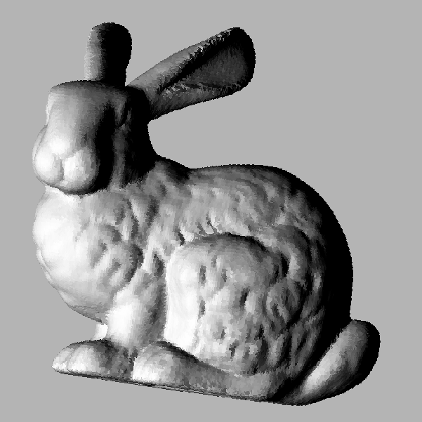
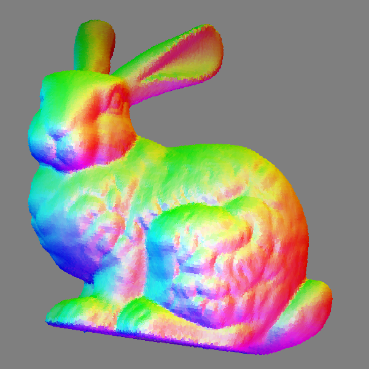

Renders a 2D heightfield image into a shading image.
You can choose between lambertian model (diffuse reflectance) and specular model (Nayar reflectance model). You can also choose between a single directional light source (using -l{x,y,z} options) or use light source which emits in all direction (by specifying the light source position with -p{x,y,z} option). Another rendering mode is given from a bitmap reflectance map which represents the rendering for a normal vector value (mapped according the x/y coordinates).
Usage: heightfield2shading [input] [output]
Allowed options are:
Positionals:
1 TEXT:FILE REQUIRED mesh file (.off)
2 TEXT=result.pgm sequence of discrete point file (.sdp)
Options:
-h,--help Print this help message and exit
-i,--input TEXT:FILE REQUIRED mesh file (.off)
-o,--output TEXT=result.pgm sequence of discrete point file (.sdp)
-s,--meshScale FLOAT change the default mesh scale (each vertex multiplied by the scale)
-a,--remeshMinArea FLOAT=0.01 ajust the remeshing min triangle are used to avoid empty areas
--heightFieldMaxScan INT=255 set the maximal scan deep.
-x,--centerX INT=0 choose x center of the projected image.
-y,--centerY INT=0 choose y center of the projected image.
-z,--centerZ INT=200 choose z center of the projected image.
--nx FLOAT=0 set the x component of the projection direction.
--ny FLOAT=0 set the y component of the projection direction.
--nz FLOAT=1 set the z component of the projection direction.
-v,--invertNormals invert normal vector of the mesh
--width FLOAT=500 set the width of the area to be extracted as an height field image. (note that the resulting image width also depends of the scale parameter (option --meshScale))
--height FLOAT=500 set the height of the area to extracted as an height field image. (note that the resulting image height also depends of the scale parameter (option --meshScale))
--orientAutoFrontX automatically orients the camera in front according the x axis.
--orientAutoFrontY automatically orients the camera in front according the y axis.
--orientAutoFrontZ automatically orients the camera in front according the z axis.
--orientBack change the camera direction to back instead front as given in orientAutoFront{X,Y,Z} options.
--exportNormals export mesh normal vectors (given in the image height field basis).
--backgroundNormalBack set the normals of background in camera opposite direction (to obtain a black background in rendering).
--setBackgroundLastDepth change the default background (black with the last filled intensity).
Example:
$ heightfield2shading ${
DGtal}/examples/samples/bunnyHeightField.pgm shading.pgm --lDir 0.0 1.0 1.0 --importNormal ${
DGtal}/examples/samples/bunnyHeightField_normals.sdp -s 1.0 0.2 0.8
You will obtain such image:

Resulting image with a 90° ccw rotation
Other example:
$ heightfield2shading ${
DGtal}/examples/samples/bunnyHeightField.pgm shading.ppm --importNormal ${
DGtal}/examples/samples/bunnyHeightField_normals.sdp --hsvShading
You will obtain such image:

Resulting image with a 90° ccw rotation (and conversion to png)
- See also
- heightfield2shading.cpp